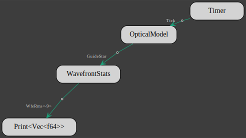
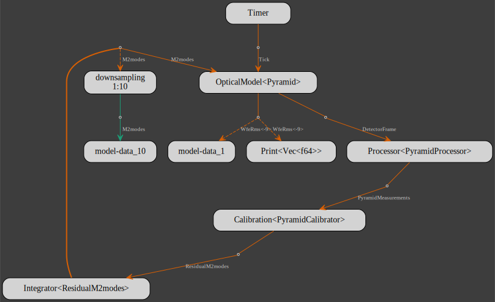

Introduction
The GMT NGAO model is build with the GMT DOS Actors integrated modeling framework. It is leveraging 2 crates: crseo and gmt_dos-clients_crseo.
crseo is a Rust wrapper for the GMT optical ray tracing and Fourier propagation software CEO. gmt_dos-clients_crseo is a higher level API build on top on crseo and it also implements the interface for DOS actors
Getting Started
Some of the prerequisites for the the NGAO model are CUDA and Rust. CUDA is the programming language that CEO is written into, meaning that a machine with a recent NVIDIA GPU is also mandatory. Rust is the programming language for DOS Actors.
Once both are installed, we can start writing our first optical model.
Note that in order to produce model flowcharts, Graphviz is needed but the models will run anyway without it.
Optical Model
For our first optical model, let's start by creating a new binary crate with cargo
cargo new --bin optical-model
and move to the new crate:
cd optical-model
The Cargo.toml file is called the manifest and it is where the crate dependencies are listed.
Let's already add some dependencies, again using cargo:
cargo add gmt_dos-clients_crseo
cargo add anyhow
cargo add tokio --features rt-multi-thread
The main script is in the src folder and it is compiled by invoking cargo:
cargo build
Once the program has compiled succesfully, it can be run with
cargo run
that prints
Hello, world!
Let's replace the contents of the main script with the following:
use gmt_dos_clients_crseo::OpticalModel;
#[tokio::main]
async fn main() -> anyhow::Result<()> {
let optical_model: OpticalModel = Default::default();
Ok(())
}The default OpticalModel is just the GMT segmented optical model with an on-axis source.
The GMT model uses M1 bending modes and a Karhunen-Loeve modal basis to set the figures of M1 and M2 segments, respectively.
The environment variable GMT_MODES_PATH must be set to the path to the folder that hold both .ceo files, e.g.
export GMT_MODES_PATH=<path-to-ceo-files>
With the environment variable set, we can run again the new main script:
cargo run
At that stage, the model is not doing anything beside building the GMT optical model.
Dynamic Optical Model
To bring the optical model to life, we need to introduce actors, and the simplest way is to use actorscript. Here we add the actorscript dependency to the crate manifest:
cargo add gmt_dos-actors
The beating heart of the model is going to be provided by the Timer client from the gmt_dos-clients crate:
cargo add gmt_dos-clients
The data that the actors are exchanging are tagged with some type parameters that are provided by the gmt_dos-clients_io crate:
cargo add gmt_dos-clients_io
With the help of the new dependencies, we re-write the main script as
use gmt_dos_actors::actorscript;
use gmt_dos_clients::{print::Print, Tick, Timer};
use gmt_dos_clients_crseo::OpticalModel;
use gmt_dos_clients_io::optics::WfeRms;
#[tokio::main]
async fn main() -> anyhow::Result<()> {
let optical_model: OpticalModel = Default::default();
let metronome: Timer = Timer::new(10);
let prt = Print::new(3);
actorscript!(
1: metronome[Tick] -> optical_model[WfeRms<-9>] -> prt
);
Ok(())
}We've added:
- a timer that gives a beat 10 times in a row:
let metronome: Timer = Timer::new(10);- the Print client to display the wavefront error RMS in nm with 3 digits precision:
let prt = Print::new(3);The actorscript macro inserts each client into its own actor and links them together according to the prescribed data flow:
the timer gives the beat to the optical model,
at each beat the optical model ray traces through the GMT to the exit pupil,
computes the wavefront RMS and
passes the value to Print that displays it.
After runnning the script with
cargo run
one should see [[+0.797]] printed consecutively 10 times at the terminal prompt.
For a faster execution, you can instead run the script with
cargo run --release
The script also produces a flowchart of the model similar to this one: 
Closed-loop NGAO
Building upon the dynamic optical model, we are going to build a closed-loop NGAO system with a pyramid wavefront sensor (P-WFS). First, we define the modal basis and the number of modes for M2:
let (m2_modes, n_mode) = ("ASM_DDKLs_S7OC04184_675kls", 66);and next we setup the P-WFS
let n_lenslet: usize = 92;
let pym = Pyramid::builder()
.lenslet_array(LensletArray {
n_side_lenslet: n_lenslet,
n_px_lenslet: 10,
d: 0f64,
})
.modulation(2., 64);The optical model is updated to include the P-WFS
let optical_model = OpticalModel::<Pyramid>::builder()
.gmt(Gmt::builder().m2(m2_modes, n_mode))
.sensor(pym)
.atmosphere(Default::default())
.build()?;where the GMT builder is invoked to set M2 and an atmospheric turbulence model has been added as well.
We then add a new flow inside actorscript with a new ouput to the optical model for the detector frame of the P-WFS
1: optical_model[DetectorFrame]The detector frame is being process with P-WFS data processor
let processor: Processor<_> = Processor::try_from(&pym)?;and within actorscript, the processor receives the detector frame and outputs the pyramid measurements
1: optical_model[DetectorFrame]
-> processor[PyramidMeasurements]The measurements are then transformed into coefficients of the modal basis by the calibrator
let calibrator: Calibration<PyramidCalibrator> = {
let mut pymtor = PyramidCalibrator::builder(pym.clone(), m2_modes, n_mode)
.n_thread(7)
.build()?;
pymtor.h00_estimator()?;
pymtor
}
.into()The calibrator is linked to the processor and it outputs residual coefficients
1: optical_model[DetectorFrame]
-> processor[PyramidMeasurements]
-> calibrator[ResidualM2modes]Finally an integral controller:
let pym_ctrl = Integrator::<ResidualM2modes>::new(n_mode * 7).gain(0.5);accumulates the residual coefficients and sends the modal coefficients to the optical model that updates M2 figure
1: optical_model[DetectorFrame]
-> processor[PyramidMeasurements]
-> calibrator[ResidualM2modes]
-> pym_ctrl[M2modes]!
-> optical_modelTelemetry
A new dependency is required in order to log data from any model:
cargo add gmt_dos-clients_arrow
Telemetry or data logging is achieve by appending a $ token to an output.
The size of the ouput that is recorded needs to be know by the data logger and it is provided by the Size trait,
if it is implemented for the client of this output like WfeRms.
The size of the output can also be passed on by inserting it within braces.
1: metronome[Tick] -> optical_model[WfeRms<-9>]$.. -> prt
10: pym_ctrl[M2modes]!${n_mode*7}
The source wavefront error RMS is logged into the Apache Parquet file: model-data_1.parquet
and M2 modal coefficients are decimated by a factor 10 and written to model-data_10.parquet.
The Parquet files can be read in Python with pandas and the data can be loaded into numpy arrays, e.g.
import pandas as pd
import numpy as np
df = pd.read_parquet("model-data_1.parquet")
wfe_rms = np.vstack(df["WfeRms<-9"])
df = pd.read_parquet("model-data_10.parquet")
modes = np.vstack(df['M2modes'])
Each row of the numpy array is a time sample.
Sometimes, only data from the last step of a simulation is needed. Noting that actor's client are persistent, meaning that they outlive the model they are part of, another model can then be used to read some data from clients from a previously completed model:
let metronome: Timer = Timer::new(0);
actorscript!(
#[model(name=wavefront)]
1: metronome[Tick] -> optical_model[Wavefront]!$
);Complete model
To compute the pyramid reconstructor, a feature needs to be added to the gmt_dos-clients_crseo crate:
cargo add gmt_dos-clients_crseo --features faer
The complete closed-loop NGAO model is given below:
use gmt_dos_actors::actorscript;
use gmt_dos_clients::{print::Print, Integrator, Tick, Timer};
use gmt_dos_clients_crseo::{
crseo::{
wavefrontsensor::{LensletArray, Pyramid},
FromBuilder, Gmt,
},
Calibration, DetectorFrame, OpticalModel, Processor, PyramidCalibrator, PyramidMeasurements,
ResidualM2modes,
};
use gmt_dos_clients_io::optics::{M2modes, Wavefront, WfeRms};
#[tokio::main]
async fn main() -> anyhow::Result<()> {
let n_lenslet: usize = 92;
let pym = Pyramid::builder()
.lenslet_array(LensletArray {
n_side_lenslet: n_lenslet,
n_px_lenslet: 10,
d: 0f64,
})
.modulation(2., 64);
let processor: Processor<_> = Processor::try_from(&pym)?;
let (m2_modes, n_mode) = ("ASM_DDKLs_S7OC04184_675kls", 66);
let calibrator: Calibration<PyramidCalibrator> = {
let filename = format! {"pym-{m2_modes}-{n_mode}.bin"};
if let Ok(pymtor) = PyramidCalibrator::try_from(filename.as_str()) {
pymtor
} else {
let mut pymtor = PyramidCalibrator::builder(pym.clone(), m2_modes, n_mode)
.n_thread(7)
.build()?;
pymtor.h00_estimator()?;
pymtor.save(filename)?
}
.into()
};
let optical_model = OpticalModel::<Pyramid>::builder()
.gmt(Gmt::builder().m2(m2_modes, n_mode))
.sensor(pym)
.atmosphere(Default::default())
.build()?;
let metronome: Timer = Timer::new(100);
let prt = Print::default();
let pym_ctrl = Integrator::<ResidualM2modes>::new(n_mode * 7).gain(0.5);
actorscript!(
1: metronome[Tick] -> optical_model[WfeRms<-9>]$.. -> prt
1: optical_model[DetectorFrame]
-> processor[PyramidMeasurements]
-> calibrator[ResidualM2modes]
-> pym_ctrl[M2modes]!
-> optical_model
10: pym_ctrl[M2modes]!${n_mode*7}
);
let metronome: Timer = Timer::new(0);
actorscript!(
#[model(name=wavefront)]
1: metronome[Tick] -> optical_model[Wavefront]!$
);
Ok(())
}The model flowchart: 